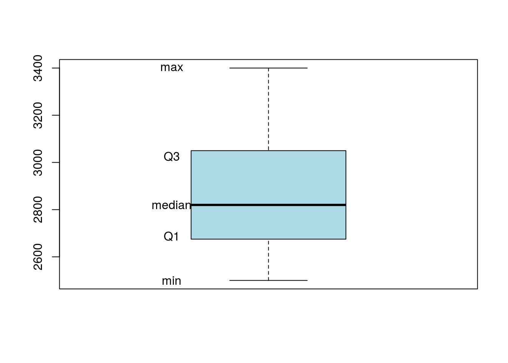
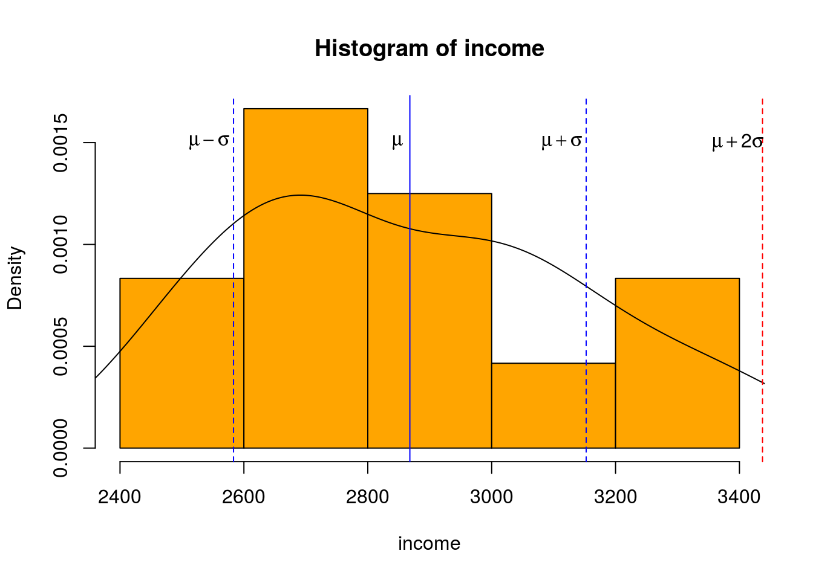
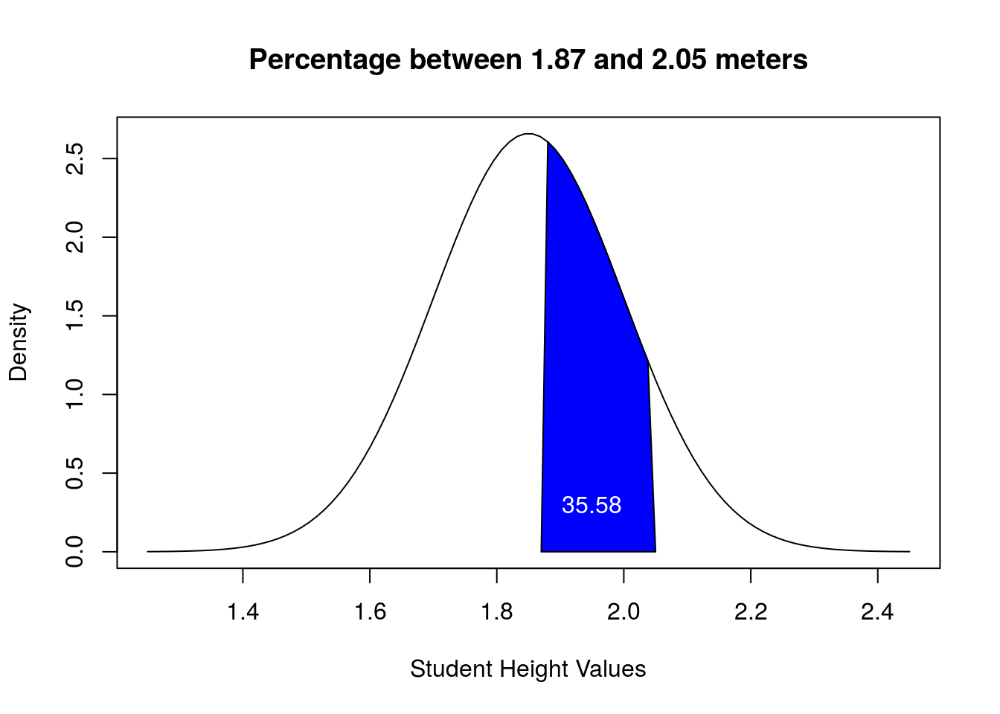

2 Udacity Even Lessons
2.1 Lesson 2 Visualization
In this exercise we will start by looking at the characteristics of our dataset. All definitions and data come from the original Udacity lesson and can be found here.
2.1.1 Data
We start by assigning our data to Petals, a list of petal counts from flowers.
Petals <- c(15, 16, 17,
16, 21, 22,
15, 16, 15,
17, 16, 22,
14, 13, 14,
14, 15, 15,
14, 15, 16,
10, 19, 15,
15, 22, 24,
25, 15, 16)2.1.2 Frequency
The frequency of a data set is the number of times a certain outcome occurs.
# Find the most frequent petal count.
# to do this we create a table from Petals, sort it in decreasing order, and get the name of the first item.
MostFreq <- names(sort(table(Petals),decreasing=TRUE)[1])
print(paste0("The most frequent petal count is: ", MostFreq))#> [1] "The most frequent petal count is: 15"# Find the frequency of flowers with 15 petals.
# We can use the same method as above but without the names
PetalFreq <- sort(table(Petals),decreasing=TRUE)[1]
print(paste0("The frequency of flowers with 15 petals is: ", PetalFreq))#> [1] "The frequency of flowers with 15 petals is: 9"2.1.3 Proportions
A proportion is the fraction of counts over the total sample.
# Find the proportion of flowers with 15 petals
TotalSample <- length(Petals)
PetalProp <- PetalFreq/TotalSample
print(paste0("The proportion of flowers with 15 petals is: ", PetalProp))#> [1] "The proportion of flowers with 15 petals is: 0.3"2.1.4 Percentage
A proportion can be turned into a percentage by multiplying the proportion by 100.
# Find the percentage of flowers with 15 petals
PetalPerc <- PetalProp * 100
print(paste0("The percentage of flowers with 15 petals is: ", PetalPerc, "%"))#> [1] "The percentage of flowers with 15 petals is: 30%"2.1.5 Histogram
A histogram is a graphical representation of the distribution of data, discrete intervals (bins) are decided upon to form widths for our boxes. R has the hist() function to make basic histograms. Here are some very simple examples.
# Create a histogram with a bin size of 2
hist(Petals, breaks = (length(Petals)/2), col = "blue")
# Create a histogram with a bin size of 5
bins <- c(10,15,20,25,30)
#hist(Petals, breaks = (length(Petals)/5))
hist(Petals, breaks = bins, col = "orange")
2.1.6 Skew
Positive Skew - A positive skew is when outliers are present along the right most end of the distribution. The histogram for Petals is an example of a positive skew
Negative Skew - A negative skew is when outliers are present along the left most end of the distribution
2.2 Lesson 4 Variability
In this exercise we will start by looking at the variability of our dataset. All definitions and data come from the original Udacity lesson and can be found here.
2.2.1 Data
We start by assigning data to income and looking at the summary statistics. I am also going to grab all of the stats to use for labels.
income <- c(2500, 3000, 2900
,2650, 3225, 2700
,2740, 3000, 3400
,2500, 3100, 2700)
summary(income)#> Min. 1st Qu. Median Mean 3rd Qu. Max.
#> 2500 2688 2820 2868 3025 3400#names(income_stats)
Income_min <- min(income)
Income_max <- max(income)
Income_med <- median(income)
Income_lowQ <- unname(quantile(income, c(0.25)))
Income_highQ <- unname(quantile(income, c(0.75)))2.2.2 Interquartile range
The Interquartile range (IQR) is the distance between the 1st quartile and 3rd quartile and gives us the range of the middle 50% of our data. The IQR is easily found by computing: Q3 - Q1
2.2.3 Box Plot
A good way to view this is using a box plot. The IQR will be displayed within the box between Q1 and Q3.
boxplot(income, col = "lightblue")
text(x = .75,y = Income_min, labels = "min")
text(x = .75,y = Income_max, labels = "max")
text(x = .75,y = Income_med, labels = "median")
text(x = .75,y = Income_lowQ, labels = "Q1")
text(x = .75,y = Income_highQ, labels = "Q3")
2.2.4 Outliers
You can use the IQR to identify outliers:
Upper outliers: Q3 + (1.5 * IQR)
Lower outliers: Q1 - (1.5 * IQR)
IQR <- Income_highQ - Income_lowQ
upper_outlier <- Income_highQ + (1.5 * IQR)
lower_outlier <- Income_lowQ - (1.5 * IQR)
cat(paste0("The Income IQR = $",IQR,"\n",
"Upper Outliers are above: $", upper_outlier,"\n",
"Lower Outliers are below: $",lower_outlier))#> The Income IQR = $337.5
#> Upper Outliers are above: $3531.25
#> Lower Outliers are below: $2181.252.2.5 Variance
The variance is the average of the squared differences from the mean. The formula for computing variance is: \[\sigma^{2} = \frac{\sum_{i=1}^{n} \left(x_{i} - \bar{x}\right)^{2}} {n-1}\]
# first let's calculate it from scratch
# get the mean of income
s_mean <- mean(income)
# get the difference between each income and the mean
r_diff <- function(x){x - s_mean}
diff_of_mean <- r_diff(income)
# get the sqr_root of each data point
sqr_of_diff <- diff_of_mean^2
#sum the squares
sum_sqrs <- sum(sqr_of_diff)
# Divide by the number of samples - 1
Var_income <- sum_sqrs / (length(income) - 1)
print(paste0("The variance caluclated by hand: ", Var_income))#> [1] "The variance caluclated by hand: 81033.9015151515"# we can also use the built in function in R
print(paste0("The variance using the R built in function: ",var(income)))#> [1] "The variance using the R built in function: 81033.9015151515"2.2.6 Standard Deviation
The standard deviation is the square root of the variance and is used to measure distance from the mean. In a normal distribution 65% of the data lies within 1 standard deviation from the mean,95% within 2 standard deviations, and 99.7% within 3 standard deviations.
std_income <- round(sqrt(Var_income),2)
print(paste0("The standard deviation caluclated by hand: ", std_income))#> [1] "The standard deviation caluclated by hand: 284.66"# we can also use the built in function in R
print(paste0("The standard deviation using the R built in function: ",round(sd(income),2)))#> [1] "The standard deviation using the R built in function: 284.66"pos_1_std <- s_mean + std_income
pos_2_std <- s_mean + std_income * 2
neg_1_std <- s_mean - std_income
neg_2_std <- s_mean - std_income * 2Let’s visualize this. I add in lines for one and two standard deviations but, because the data are not normal the standard deviations fall outside of the ranges defined by the three sigma rule of thumb.
hist(income, probability = TRUE, col = "orange")
lines(density(income))
abline(v = s_mean, col = "blue", )
abline(v = pos_1_std, col="blue", lty = "dashed")
abline(v = neg_1_std, col="blue", lty = "dashed")
abline(v = pos_2_std, col="red", lty = "dashed")
abline(v = neg_2_std, col="red", lty = "dashed")
text(s_mean - 20,.0015, expression(mu))
text(pos_1_std - 40,.0015, expression(mu + sigma))
text(neg_1_std - 40,.0015, expression(mu - sigma))
text(pos_2_std - 40,.0015, expression(mu + 2*sigma))
2.3 Lesson 6 Normal Distribution
In this exercise we will find the probability of a given observation within a normal distribution. All definitions and data come from the original Udacity lesson and can be found here.
#install.packages("ggfortify")
#library(ggfortify)2.3.1 Probability Distribution Function.
The probability distribution function is a normal curve with an area of 1 beneath it, to represent the cumulative frequency of values.
2.3.1.1 Data
mean=1.85; sd=.15
lb=1.7; ub=2
#generate student heights
x <- seq(-4,4,length=100)*sd + mean
hx <- dnorm(x,mean,sd)2.3.1.2 Create a density plot
plot(x, hx, type="n", xlab="Student Height Values", ylab="Density",
main="Probability Distribution")
lines(x, hx)
polygon(c(lb,x,ub), c(0,hx,0), col="blue") 
2.3.2 Finding the probability
If given an observation, you can find the probability and show the area below, above, and between particular observations. To do this you must first calculated the z-score
2.3.2.1 Z-Score
\[ z=\frac{x-\mu}{\sigma}\] The z-score is calculated by taking the observation minus the mean and dividing by the standard deviation. If given an observation of 2.05 meters the z-score would be calculated as follows:
obs1 <- 2.05
obs1_zscore <- round((obs1 - mean)/sd, 2)
print(paste0("The Z-Score for a student with the Height of 2.05 meters is: ", obs1_zscore))#> [1] "The Z-Score for a student with the Height of 2.05 meters is: 1.33"2.3.2.2 Proportion using a z-table
From this we know that a height of 2.05 is 1.33 standard deviations away from the mean. With this information we can use a z-table to determine the proportion of students that are shorter than this. The z-table can be found here.
{kind=link}
From the z-table we get a proportion of .9082 or 90.82 percent. A person with the height of 2.05 is taller than 90.82 percent of the students. We can calculate this in R using the pnorm function. It will give a more exact number than when using the table.
2.3.2.3 Proportion using pnorm
#you can also use pnorm to get the proportion rather than looking it up in a z-table
obs1_spor <- round(pnorm(obs1, mean, sd),4)
print(paste0("The proportion of students shorter than 2.05 meters is: ", obs1_spor))#> [1] "The proportion of students shorter than 2.05 meters is: 0.9088"2.3.2.4 Plotting the percentage
By multiplying the proportion by 100 you can get the percentage of students that are shorter than 2.05 meters. You can also find the percentage of students that are taller than 2.05 meters by subtracting the proportion from 1.
# a plot of the data
plot(x, hx, type="n", xlab="Student Height Values", ylab="Density",
main="Percentage above and below 2.05 meters")
# to plot the proportion I grab the samples that are above and below the observation.
i <- x <= obs1
o <- x >= obs1
lines(x, hx)
# I use the gathered high and low observations to make polygons showing the area.
polygon(c(lb,x[i],obs1), c(0,hx[i],0), col="blue")
polygon(c(obs1,x[o],ub), c(0,hx[o],0), col="yellow")
#label the percentage
taller_obs1 <- round((1 - obs1_spor) * 100, 2)
shorter_obs1 <- obs1_spor * 100
text(1.8,.3, labels = shorter_obs1, col = "white")
text(2.1,.3, labels = taller_obs1, col = "blue")
2.3.2.5 Proportion of a range
You can find the proportion of students that fall between a given range by subtraction the proportion of the first observation from the proportion of the second observation.
obs2 <- 1.87
obs2_spor <- round(pnorm(obs2, mean, sd),4)
# a plot of the data
plot(x, hx, type="n", xlab="Student Height Values", ylab="Density",
main="Percentage between 1.87 and 2.05 meters")
# to plot the proportion I grab the samples that are between the observations.
i_diff <- x >= obs2 & x <= obs1
lines(x, hx)
# I use the gathered range of observations to make polygons showing the area.
polygon(c(obs2,x[i_diff],obs1), c(0,hx[i_diff],0), col="blue")
#label the percentage
between_obs <- round((obs1_spor - obs2_spor) * 100, 2)
text(1.95,.3, labels = between_obs, col = "white")